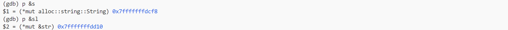
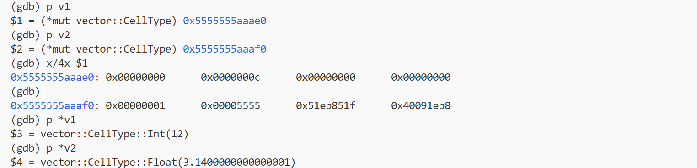

如何调试一个rust程序？
$ gdb excutable
简单的示例：

查看变量的地址：
格式化p s的输出：
$17 = alloc::string::String {
vec: alloc::vec::Vec<u8, alloc::alloc::Global> {
buf: alloc::raw_vec::RawVec<u8, alloc::alloc::Global> {
ptr: core::ptr::unique::Unique<u8> {
pointer: core::ptr::non_null::NonNull<u8> {
pointer: 0x5555555abb80
},
_marker: core::marker::PhantomData<u8>
},
cap: alloc::raw_vec::Cap (16),
alloc: alloc::alloc::Global
},
len: 16
}
}
提要：p <variable> p &<variable> ptype <variable>
dbg! 辅助输出调试信息中的所有权问题
错误的：
dbg!(var); // move
dbg!(var); // invalid reference
dbg!将拿走var的所有权(Move)，var就不能再用了。
正确的：
dbg!(&var);
// or
let new_var = dbg!(var);
dbg!(&new_var); // if u will
关于 gdb
对于想探究的东西，使用gdb去进行探索，例如：[enum的底层表示？] -> 写一个简单的例程，编译成可执行文件，然后进行gdb，使用print var print &var x/x <addr>进行探索。
关于对 vector 的引用
-
一个摘录
ch08-01
/* CANNOT COMPILE */ let mut v = vec![1, 2, 3, 4, 5]; let first = &v[0]; v.push(6); println!("The first element is: {first}");The code in Listing 8-6 might look like it should work: why should a reference to the first element care about changes at the end of the vector? This error is due to the way vectors work: because vectors put the values next to each other in memory, adding a new element onto the end of the vector might require allocating new memory and copying the old elements to the new space, if there isn’t enough room to put all the elements next to each other where the vector is currently stored. In that case, the reference to the first element would be pointing to deallocated memory. The borrowing rules prevent programs from ending up in that situation.
一个问题：如何让一个Vector看起来存储了多种类型的数据？
答案：让Vector存储enum，enum含有多种类型的variant，在某种程度上可以说Vector存储了多种类型的数据。
fn main(){
let v: Vec<CellType> = vec![
CellType::Int(12),
CellType::Text(String::from("word")),
CellType::Float(3.14),
];
let v1 = &v[0];
}
enum CellType {
Int(i32),
Float(f64),
Text(String),
}
gdb 调试 enum 示例与 gdb（以及其他REPL）中的 history variable
源代码：
fn main(){
let v: Vec<CellType> = vec![
CellType::Int(12),
CellType::Float(3.14),
];
let v1: &CellType = &v[0];
let v2: &CellType = &v[1];
println!("END");
}
enum CellType {
Int(i32),
Float(f64),
}
调试实录：
p v1：打印v1: &CellType的值，也就是指针值，即附带数据存储在堆上的地址，注意到v1, v2对应的数据各占据了16个字节。x/4x $1：检查v1指针指向的16字节p *v1：解引用v1查看该内存处存储的实际值
-
enum在计算机中存储的实际数据分析- 第一个字节应该是variant标识符，对应关系：
0-Int1-Float Int：附带数据存储在第二个字节，0x0000000c即代码中的Int(12)Float：附带的数据存储在第三、四个字节0x40091eb8_51eb851f是3.14的IEEE 754 64bit表示- 遗留的问题：为什么上述两变体存储附加数据的位置不同，
Float中的0x00005555是什么？
- 第一个字节应该是variant标识符，对应关系：
-
gdb的使用拾遗 (history variable)：
p var打印出来的$x是一种 history variable, 供用户后续复用的，类似的 REPL 行为还有bash 里echo $(ls)，mit-scheme 也会为返回的 procedure 给出一个可引用的 history variable（不过这个 variable 很长，且包含了 #[] 等特殊字符，真正要复用还是要复制一遍标识符，绑定在某个标识符上再复用。）。
RUST_BACKTRACE 与命令行拾遗
$ RUST_BACKTRACE=1 cargo run
$ A=12 B=23 echo "$A $B"
在命令的最左可以写临时的环境变量。
花里胡哨的技术：rust的println的色彩转义
println!("\x1b[34mMESSAGE\x1b[0m");
-
使用
\x1b[34m进行转义 -
\x1b是什么？\x表十六进制，1b是ESC的ASCII十六进制码
Result<T, E>的unwrap和expect 之间的区别：
适当地看一些库函数的实现，可以对封装好的函数有更具体的了解，例如Result<T, E>的unwrap和expect，看过源码就可以知道这两者的区别在于何处（只在于unwrap_failed的msg参数，至于unwrap_failed只是一个对panic!的封装）：
impl<T, E> Result<Result<T, E>, E> {
...
pub fn expect(self, msg: &str) -> T
where
E: fmt::Debug,
{
match self {
Ok(t) => t,
Err(e) => unwrap_failed(msg, &e),
}
}
pub fn unwrap(self) -> T
where
E: fmt::Debug,
{
match self {
Ok(t) => t,
Err(e) => unwrap_failed("called `Result::unwrap()` on an `Err` value", &e),
}
}
...
}
fn unwrap_failed(msg: &str, error: &dyn fmt::Debug) -> ! {
panic!("{msg}: {error:?}")
}